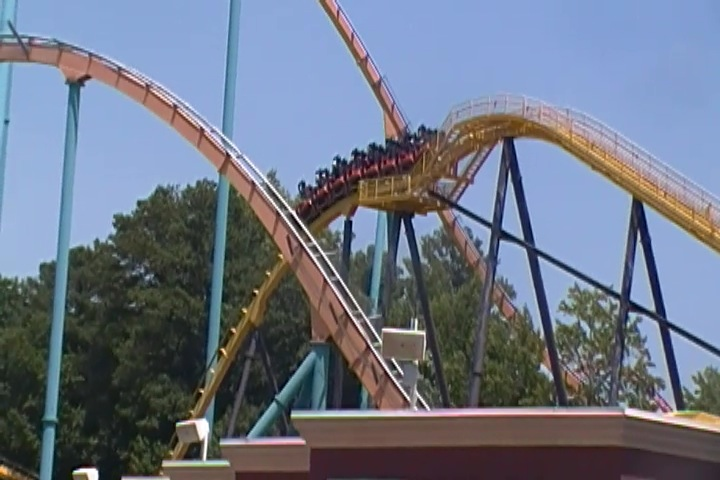

| |
Georgia Scorcher Review
We're here at Six Flags Over Georgia. Today's ride we'll be reviewing for you is Georgia Scorcher. This may look like a small little ride, but this is without a doubt, one of the best Stand Up coasters. You straddle the seat to a comfortable setting, pull down the OTSR, and then we're off! We climb up the lifthill. There's really not much of a view. We get to look at the rest of the Georgia Scorcher, as well as one of the hills of Goliath, which just towers above us. So it really doesn't look like much of a ride and this must just be a small little ride. Well, as you all know, looks can be deciving. We all know that some of the best coasters ever are tiny rides. And that's why this is the 2nd best stand up coaster, despite its small size, only being beaten out by Riddlers Revenge. Anyways, we reach the top, go through the pre-drop and down the first drop. I know this doesn't look like much due to the fact that it's a small little drop, but in the back seat, there's actually some ejector air on this ride. And I'm just going to point this out. #1. Ejector air on Stand Up coasters is AWESOME! I love it. And #2. NO!!! It does NOT hurt your balls! Seriously, it doesn't. Stop whining about that! Anyways, we rise out of our seats and down the really fun first drop. And hey, we gained some speed. We then head into the vertical loop. And this thing is powerful. Really powerful. It almost feels like a stand up version of Batman the Ride at this point. It really pulls some Gs right there. But unlike Batman, and most B&Ms, this ride isn't really about inversions. So we just head into a curved hill. Again, this really puts on the Gs here. It curves up into a hill, and then just twists in the opposite direction as we twist back down to the ground. This gives us a nice snap, and it's why I love the ride so much. We then head into this sort of banked turn that threads the loop. I really like this, and it pulls a lot of Gs. Though if you listen to people who talk about Mindbender, they just might try to tell you that this counts as a third inversion. ;) We then go into this banked hill. A 90 degree banked hill. I just love this element. It's not an airtime hill. But it does really twist us and give us some good 90 degree action. And then it throws us into a corkscrew that just tumbles us right through it. Seriously, you don't even get a chance to blink. Just tumble right on through. OK, Georgia Scorcher does get a little tamer afterwards, but it's still a lot of fun. We go through half of an upward helix, again giving us some nice Gs, before dipping on down. Head through another little twisty bit, and hey. More laterals. I'm enjoying this low to the ground turn. Head through another twisty hill, and right into the brake run. You know what this is, the more I think about it? This is the ride that Iron Wolf and Vortex were MEANT to be. They're all small B&M Stand Up coasters, about 100 ft, only having a vertical loop, a corkscrew, and some twisty bits. Except while Iron Wolf and Vortex are clunky, sluggish, and on the rough, Georgia Scorcher really amps up the twistiness, always maintains its speed, is more agressive, and smooth as glass. That's why I love it and rank it as the 2nd best stand up coaster (And Riddlers is only a little better). This is definetly one of the better B&Ms and an underrated ride that doesn't get enough love. Definetly check it out while at Six Flags Over Georgia.
8/10
Location: Six Flags Over Georgia
Opened: 1999
Built by: B&M
Last Ridden: June 27, 2016
Georgia Scorcher Photos




Home
|